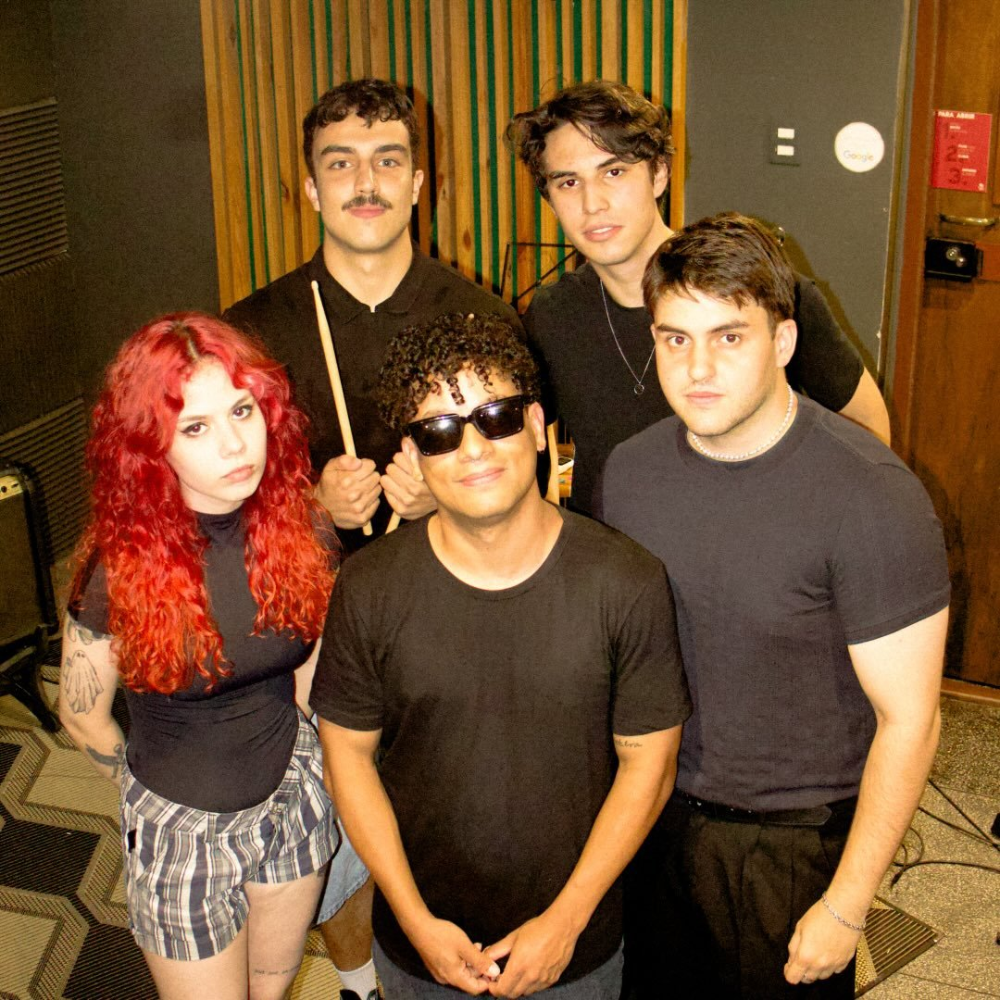
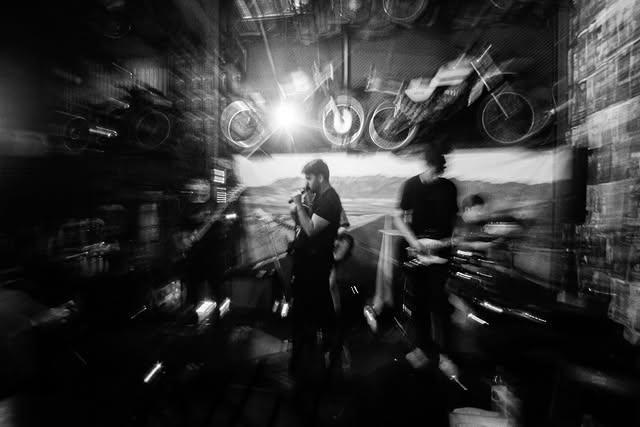

Som autoral e covers.
A Lizard é uma banda de rock alternativo que mistura muita energia e muito talento.
No repertório, a banda traz releituras e influências de artistas como:
A Lizard se apresenta em bares e eventos em Santa Maria – Rio Grande do Sul.

Entre em contato pelo Instagram oficial:
@lizard.sm